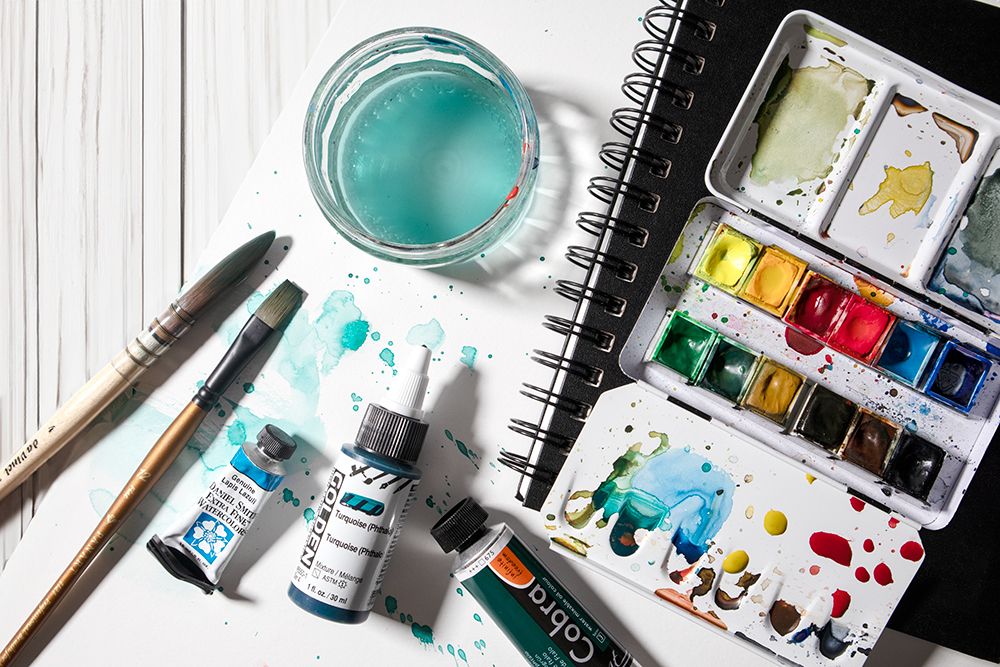
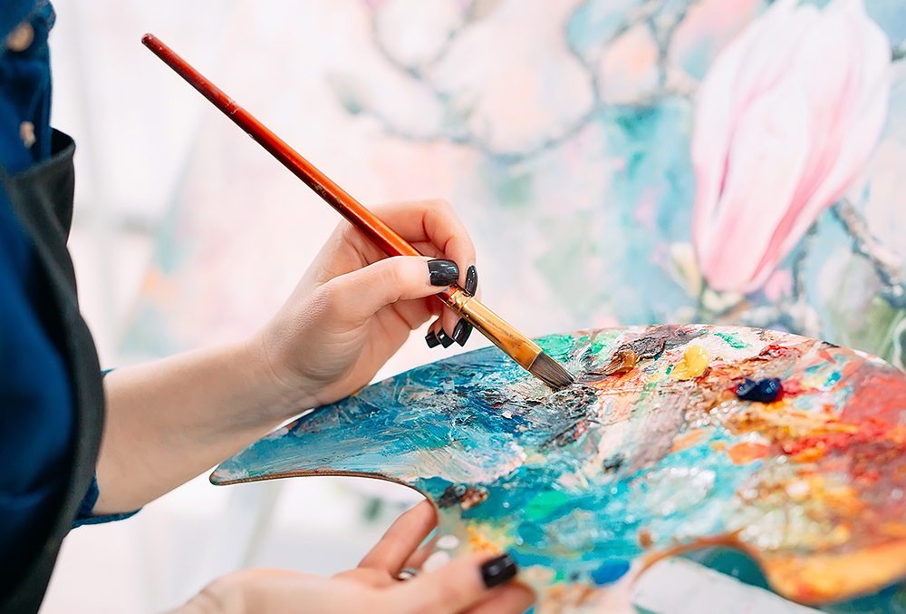
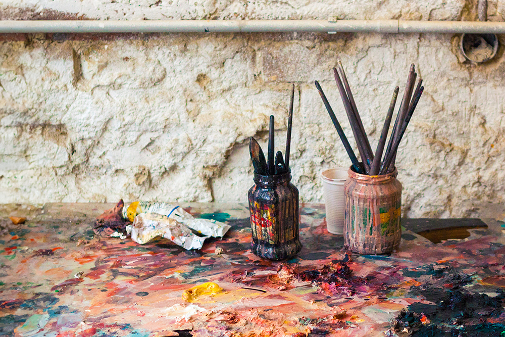
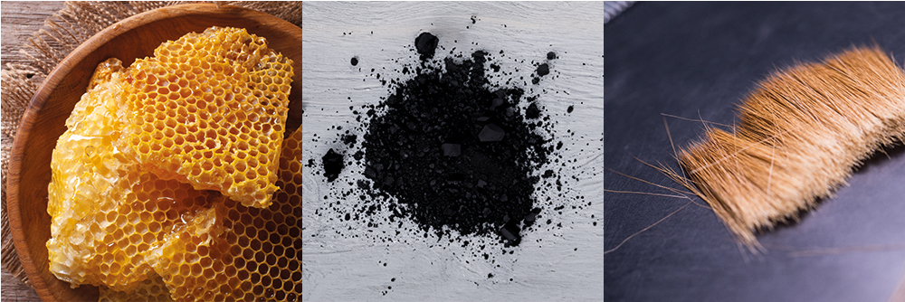
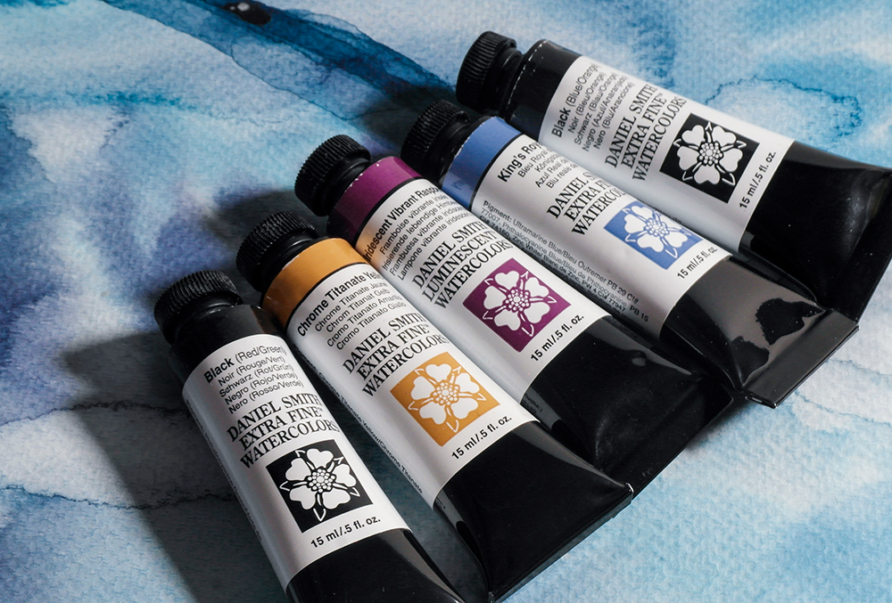
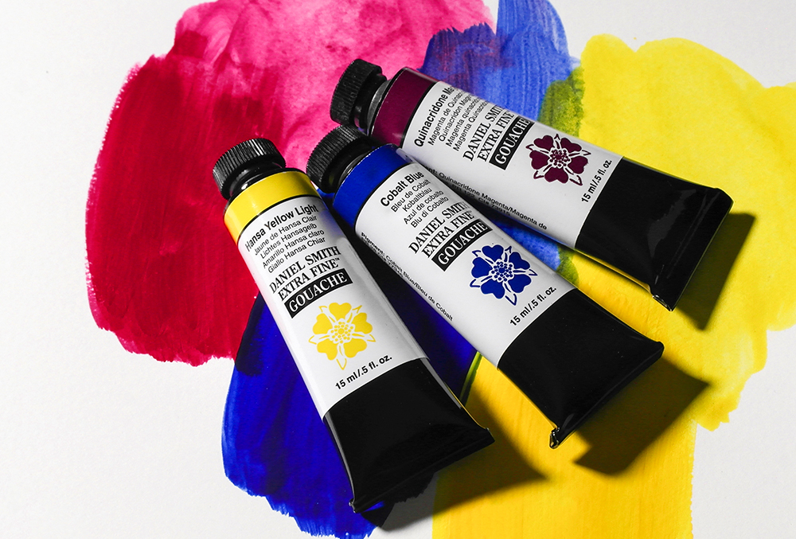
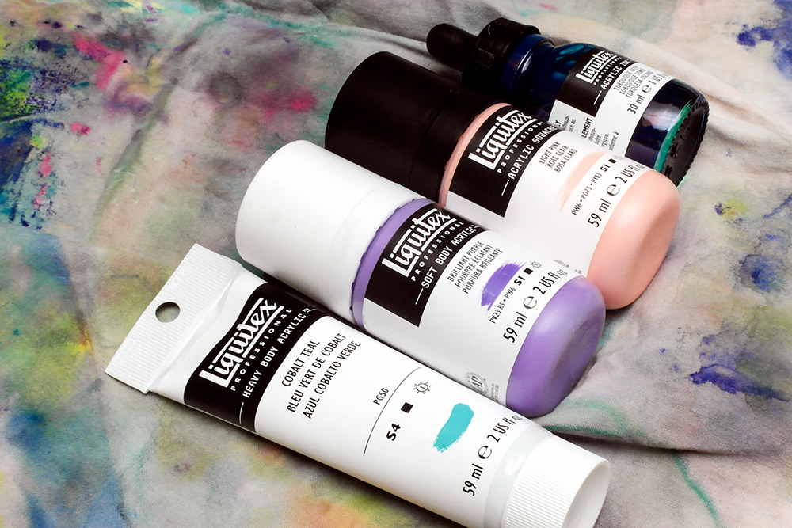
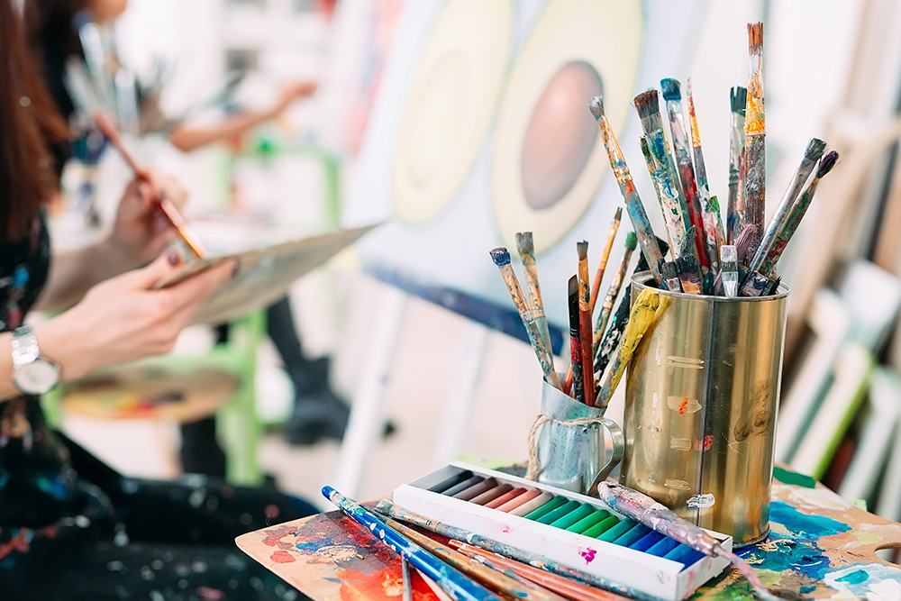

The Ultimate Guide to Vegan Art Supplies
Tanith Hindley
January 12, 2024
Veganism encompasses all elements of your lifestyle - which extends to the materials you choose to make art with too. While many of our creative predecessors relied on the use of animal materials in their art supplies, we now have way more choice in what's available. Although there has been a massive increase in the number of vegan artists, it's not always obvious what is and isn't suitable for vegans. Here we've gathered together some information about vegan-friendly materials to help you shop.
Bring up 'Vegan Art Materials' and you might be met with confusion. People may even conjure up images of artists eating their materials. But the truth is that veganism encompasses way more than what's in your diet.
Historically, animal ingredients were unavoidable - whether it be animal hair in brushes, ground beetles in pigments, or animal skin paper - it would be very difficult to eliminate these materials from your practice. Thankfully, art supplies have come a long way since then, and technological advancements mean that contemporary artists have a lot more choice in the materials they use. Ultimately, transparency in the materials we use is becoming more and more important - not just for vegan artists, and not just for art supplies.
Of course, you don't need to be a vegan to enjoy using vegan art materials. Artists may choose to eliminate animal-derived materials from their practice for all kinds of reasons. Whether you're just looking to avoid using animal hair brushes, are slowly reducing the animal-derived materials in your studio or are eradicating the use of animal materials all together - we hope this list will help you narrow down the options available to you.
What is veganism? And what are vegan artists?
Veganism has grown exponentially over the past few years and with it has come an awareness of the materials and ingredients we use to make our favourite art materials. Rooted in the eradication of animal exploitation, vegan artists seek to eliminate animal derived ingredients from their practice and studio. Something that can be incredibly difficult as suppliers can be notoriously bad at declaring ingredients and animal testing policies.
The Vegan Society is the oldest vegan organisation in the UK, and defines veganism as the following:
“Veganism is a philosophy and way of living which seeks to exclude—as far as is possible and practicable—all forms of exploitation of, and cruelty to, animals for food, clothing or any other purpose; and by extension, promotes the development and use of animal-free alternatives for the benefit of animals, humans and the environment. In dietary terms it denotes the practice of dispensing with all products derived wholly or partly from animals."
While not every vegan endorses the Vegan Society, the vast majority will live roughly by this mantra. One of the key phrases to takeaway from the quote is where 'possible and practicable'. What is 'possible' or 'practical' will vary from artist to artist. While vegan artists make every effort to avoid animal products in their practice, there are no 'hard and fast' rules.
How do I know if my art supplies are vegan?
Unfortunately there is no straightforward answer. Veganism has increased in popularity dramatically over the past decades. This popularity has seen massive improvements in the labelling of food, household products, cleaning supplies and cosmetics. However, this labelling hasn't yet carried over to art materials.
Understandably this is quite frustrating as, more often than not, any enquiries you submit to manufacturers can go months without a response. Obviously sitting around for months on end waiting for an answer doesn't exactly foster creativity!
When it comes to vegan art supplies, you also might have come across terms like 'vegan', 'ethical, 'cruelty-free' and 'eco-friendly' used interchangeably. People often toss these terms around, but it's important to know that each of them carries a unique meaning. Just because a product ticks some of these boxes doesn't automatically make it vegan.
The composition of ingredients, the materials used for packaging, and the manufacturing processes all play a role in determining the overall impact of a product. So, while a product might be vegan, it might not necessarily be ethical or eco-friendly, and vice versa. For instance, a product might be free from animal-derived ingredients, yet its manufacturing could involve practices that exploit workers. Additionally, a seemingly vegan product might have excessive plastic packaging, which raises questions about its eco-friendliness. While these considerations might not be explicitly part of veganism, you'll find that many vegan artists will take them into account when choosing their art supplies.
Currently the Vegan Society endorse none of the brands or art materials we stock.
Common Non-Vegan Ingredients in Art Supplies
To save you some time, we've gathered together a list of some of the most common non-vegan ingredients that you'll need to look out for in your art supplies:
BEESWAX
Beeswax is a yellowish wax that honey bees produce. It is an ingredient in most Cold Wax Painting Mediums, encaustic painting supplies is also present in some wax pastels.
CASEIN
Casein is a milk protein and a primary component of Casein Paint. It is present in some types of adhesives.
CARMINE
Carmine (NR4) is a red pigment derived from the kermes insect. Genuine carmine paints are uncommon as the colour is fugitive, however you can source it as a pigment powder.
CHAMOIS
Chamois is a type of animal leather. Artists' use chamois rags to blend charcoal and pencil.
CHOCHINEAL
Cochineal is a historical colour derived from the Cochineal insect. It produces a carmine red dye sometimes found in inks.
EGG
Egg is a primary ingredient of Egg Tempera - a gouache-like paint. Historically it has been a popular medium for icon panting and pre-dates oils.
GELATIN
Gelatine is used by some manufacturers to size paper. It is derived from collagen extracted by boiling animal skin, tendons, ligaments and bones with water.
GENUINE GESSO
Genuine Gesso is made from chalk and hide glue (most commonly Rabbit Skin Glue). Modern Acrylic Gessoes are based on an acrylic formula and don't contain animal ingredients.
GENUINE VELLUM
Genuine Vellum - Traditional vellum is a surface made from prepared animal skin. Artists sometimes use the word 'parchment' interchangeably. Vellum has mostly fallen out of favour due to low demand and a complicated manufacturing process.
GLYCERINE
Glycerine is a plasticiser and humectant added to watercolour paints to make the gum Arabic binder more flexible and easy to redissolve in water. Glycerine can be either plant or animal derived, as well as produced synthetically in a lab. Paintmakers use plant glycerine as animal glycerine tends to yellow with time.
GOAT HAIR
Goat Hair is used to make some types of brush, like traditional hakes and mop brushes.
HOG BRISTLE
Hog Bristle is a stiff natural hair used to make oil painting brushes.
HONEY
Honey is a viscous, syrupy substance made by bees. It is sometimes added to Watercolour paints to improve their consistency. It also has antimicrobial properties.
LEATHER
Leather is a robust material made from tanned or chemically treated animal hides. You may come across it in storage accessories like pencil cases, brush wallets and the straps of certain Easels and boxes.
OX GALL
Ox Gall is a wetting agent used in watercolour painting. Although it is available as its own medium, some watercolour brands include it in their paint formula. It is a type of bile obtained from the gall bladders of cattle.
PBK9 - IVORY BLACK/BONE BLACK PIGMENT
PBk9 is a black pigment found in paint. It is sometimes referred to as Bone Black or Ivory Black. PBk9 pigment was once obtained by burning genuine ivory. While ivory is no longer used, the pigment does still rely on the charring of other animal bones.
RABBIT SKIN GLUE
Rabbit Skin Glue is made by boiling the hide and bones of rabbits. It can be used to size canvases and is also an ingredient in Genuine Gesso.
SABLE HAIR
Sable is a natural hair obtained from various species of weasel, and commonly used in natural hair watercolour brushes.
SHELLAC
Shellac is a resin made from the secretions of the female lac bug. It can be used as a varnish and is also a vehicle in some inks.
SQUIRREL HAIR
Squirrel Hair is a thin, fine natural fibre used to make watercolour brushes.
TALLOW
Tallow is a rendered animal fat. It is used as an ingredient in the leads of some graphite pencils.
WOOL
Wool isn't an ingredient in many art materials, however woollen felts are used in the manufacture of some papers.
This list isn't exhaustive but includes some of the more obvious uses of animal materials in art. Unfortunately it isn't always going to be apparent that animal ingredients are present in your materials. On the surface a product may appear vegan, but it's component parts may not be. Does the product contain glues or varnishes that are animal-derived? Does the packaging the product come in contain any non-vegan materials?
Vegan Watercolour Paints & Watercolour Mediums
Watercolour Paints can include a few different ingredients that mean they aren't suitable for vegans. Honey is a common additive that improves consistency and aids rewetting. Sometimes, manufacturers add Ox Gall, a wetting agent, to certain colours to enhance dispersion. Of course, there's always the pesky PBk9 pigment to look out for
Non-vegan watercolours include: Winsor & Newton Professional Watercolours*, Daler-Rowney Artists, Sennelier L'Aquarelle, Schmincke Horadam Aquarelle, Michael Harding and Gansai Tambi.
Vegan Watercolour Mediums
Like with Watercolour Paints, there are some main ingredients in Watercolour Mediums to steer clear of. You should avoid any additives containing Ox Gall (like Ox Gall Medium and Onetz Medium). Lifting Preparation also includes non-vegan ingredients. Schmincke Aqua Bronzes are vegan.
Vegan Gouache Paint
There's a lot of crossover in the types of ingredients you'll find in Watercolour Paint and Traditional Gouache. Traditional Gouache is made using a gum Arabic binder and some colours have ox gall added to improve wetting. Acrylic Gouache uses an acrylic resin which typically doesn't contain animal ingredients.
Vegan Acrylic Paints & Acrylic Mediums
Acrylic Paints are made from artists pigments bound in an acrylic polymer resin. Typically, these resins don't include animal ingredients, meaning the only thing you'll need to keep an eye out for is non-vegan pigments
Acrylic Mediums
Acrylic Mediums use the same resin formula as acrylic paints, so virtually all mediums are animal ingredient free. It's important to note that Acrylic Gesso and Genuine Gesso are not the same product. If you're looking for a vegan Gesso then check out our Acrylic Gessoes and avoid anything described as 'Genuine' or 'Traditional' Gesso as these will contain rabbit skin glue.
Disclaimer
Unfortunately manufacturers can change their ingredients without warning. While we do try to keep on top of these changes, some do slip through the net. All information was correct at the time of publishing, but please let us know if there is something you think we need to check. Please note that our lists only cover the art materials that we currently stock.
Some manufacturers didn't reply to our requests for information about their ingredients, so they aren't in our lists. Additionally, some manufacturers state that their products were vegan to their knowledge, but they couldn't guarantee that the raw materials they use don't undergo animal testing. Faber-Castell were the only brand that explicitly stated that even their packaging is free from animal-based glues.
This list is by no means exhaustive. Think there's something we stock that's missing from the list? Please let us know and we'll add it on! And if you found your favourite vegan art materials missing from our website please let us know - it could be something we'll stock in the future!
You won't have to compromise compassion for quality
We hope our blog post makes shopping for vegan art materials easier! It's now easier than ever to make conscious purchasing decisions so that your materials fall inline with your lifestyle. Remember, we're all human; slip-ups happen. So, if you mistakenly purchase something doesn't perfectly align with your values, don't be too hard on yourself. Embrace progress, not perfection! Be sure to visit our website and shop for a wide variety of vegan art materials to kickstart your creativity!